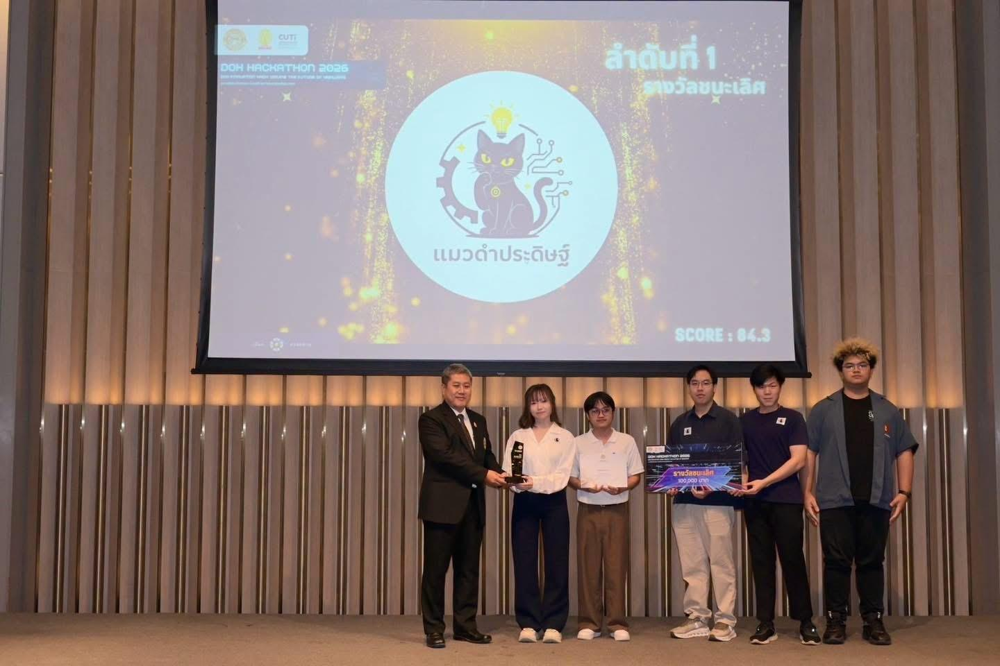

1st place · DOH Hackathon 2026
CMISSION
Black-smoke detection · July 2026
Screening vehicle emissions with computer vision. I developed and evaluated the black-smoke detection prototype and contributed to the proposed screening architecture.
0.763 test mAP@0.5 · 3,173 images
Read project notes
The prototype reported 122 FPS inference in its evaluation setup. The multimodal architecture combined CCTV, microphone arrays, and edge hardware as a proposal for further screening; it was not a deployment across 110 stations.